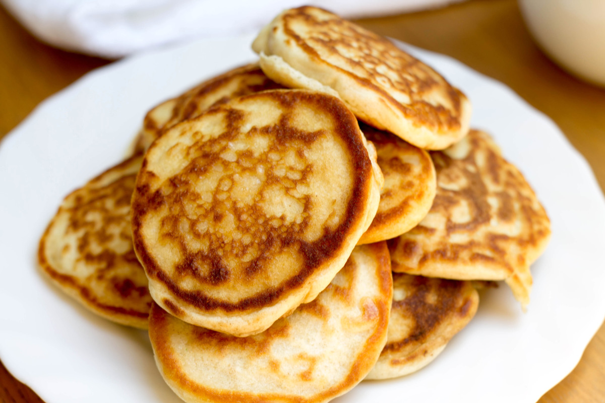

Pancakes
Source: “Good Old-Fashioned Pancakes” from allrecipes.com
Yield: 8 servings
Ingredients
- 1 ½ cups all-purpose flour
- 3 ½ tsp baking powder
- 1 tbsp white sugar
- ¼ tsp salt, or more to taste
- 1 ¼ cups milk
- 3 tbsp butter, melted
- 1 egg
Instructions
- Sift flour, baking powder, sugar, and salt together in a large bowl. Make a well in the center and add milk, melted butter, and egg; mix until smooth.
- Heat a lightly oiled griddle or pan over medium-high heat. Pour or scoop the batter onto the griddle, using approximately ¼ cup for each pancake; cook until bubbles form and the edges are dry, about 2 to 3 minutes. Flip and cook until browned on the other side. Repeat with remaining batter.